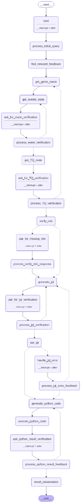

Analytics AI Pipeline
Building a governed AI pipeline where every step is validated, every output is editable, and the AI can never silently be wrong.
A fast-moving team making slow decisions
The problem wasn’t data. It was translation.
Humans ask questions in outcomes ("Why are D7 numbers dropping?"). Analytics schemas answer in events (AppLaunch, filtered by ms timestamps). Between those two things sits a gap that looks small and is enormous.
The team didn't need better analytics dashboards. They already had Mixpanel. What they didn't have was a reliable, governed path from intent to correct query. The translation was happening in one person's head—the analyst. And the analyst queue never cleared (averaging 4+ hours from question to validated answer).
Worse, prior AI tools filled gaps silently. For example, a date range of 2015-2025 was returned when a user typed "today only". This is the most dangerous failure class: confident wrong output that only gets discovered after a decision has been made.
People making decisions under uncertainty
Anyone with a question — trying to prove, validate, or challenge a call.
Product Managers
Shipping decisions daily across multiple live games
Designers
Interpreting player behavior, not just designing screens
Analysts
Handling edge cases, not answering every basic question
Founders & Decision-Makers
Validating bets, not waiting for perfect data
The system wasn’t failing. It was working — incorrectly.
Reduce analyst dependency — give teams a simpler Mixpanel interface.
Every question had to cross a translation gap — from business intent to schema language. That gap lived in one person's head.
Three simultaneous failures:
Speed
4h latency
Translation
Intent → schema
Trust
Unverifiable output
From questions to decisions — without losing intent
The queue never cleared. Decisions didn't wait. Data did.
Inside the analyst queue
- 2 weeks of shadowing
- 4+ hour delay from question to validated answer
- Teams moved forward before data arrived
PM & Designer interviews
- Decisions made before data arrived
- Data used to justify, not decide
- Designers observed behavior they couldn't verify
Failure patterns
- Not edge cases — recurring issues
- Required analyst intuition to detect
- Invisible to users asking the question
“Users don't know what they don't know. The system doesn't know what the user meant.”
Every query is a reconciliation between two incomplete pictures.
We weren't optimizing for speed.
We were protecting against being
wrong.
Two non-negotiable constraints:
- Any solution retaining analyst dependency FAILED
- Any solution reducing trust via automation FAILED
This eliminated:
- Faster dashboard Dependency remains
- Chat interface Invisible reasoning
- Fully automated AI Trust collapses
A governed path from intent to validated answer
A pipeline where every step is visible, validated, and editable
Five layers. Each one closes a specific translation failure.
Semantic Resolution
Name → canonical identifier
Closes: naming ambiguity across teams ClarifierEvent Routing
Intent → correct Mixpanel event
Closes: wrong event = wrong data Human GateTechnical Query
Plain-English intent spec
Closes: misclassification before code Human GateJQL Generation
Commented, editable query
Closes: approval without understanding Human GatePython Analysis
Computed + validated result
Closes: silent computation errors Human GateThe system must be visible to be trustworthy.
Natural language query
Plain text input with no schema knowledge required
Semantic + event resolution
Named stage status. User validates event before code runs.
Technical Query gate
Plain-English intent. User approves what system intends to do.
JQL gate
Editable query + inline comments. Every clause explained.
Result gate
Output as draft. Explicit prompt for correction.
Why the pipeline is visible from Stage 0
Chat hides reasoning. A PM under pressure approves anything that looks complete. Making every stage named and visible sets the mental model upfront: you are watching a structured process, not waiting for a black box.
Why outputs are always drafts
Because AI is probabilistic, every output is positioned as a suggestion awaiting human confirmation. The final gate always asks: 'Please provide feedback if you require any changes.'
Why edits are allowed at every gate
Approval without edit = blind trust. Edit without explanation = blind modification. Both fail. Inline comments and editability must be designed together — neither works without the other.
How a question transforms across five layers.
User Intent
Natural languageSemantic Resolution
Entities resolvedEvent Selection
Events confirmedTechnical Query
Intent in EnglishMetric: AppLaunch presence on D7.
Filter: multiplayer session on D0/D1.
JQL + Python
Executable codeView Full Pipeline

One query. Five stages. From intent to validated output.
A PM asks a question in natural language. The system translates, validates, and executes it step-by-step — with every stage visible before results appear.
Stage 0 — Before submission
Home state. Query typed. Full pipeline visible before execution.
Stage 1 — Understanding intent

System interprets the question and determines relevant events — no query generated yet.
What this system prevents

“Today only” resulted in a 2015–2025 range. Output looked valid, but was wrong. No error surfaced.
The system is designed to stop this before execution — not detect it after.
Final State — Output with validation

All stages complete. Output is shown as a draft with a final human validation step.
Designing for AI that can be wrong — safely
Three system-level choices that defined the architecture.
Chat hides reasoning. A PM can see an output without understanding how it was produced — exactly the failure mode we were trying to eliminate.
Step-based pipeline where every stage is named and visible. Each completed stage is a trust deposit before the next gate.
Because AI is probabilistic, the reasoning must be visible — not just the output.
UI-level validation (modals, warnings) can be dismissed. Under deadline pressure, they always are.
Seven interrupt-after nodes in LangGraph. The pipeline cannot execute past them. Enforced at the workflow layer, not the interface layer.
Because AI makes confident wrong guesses, validation must be structurally impossible to skip.
Automatic global learning is fast. It's also dangerous — one wrong correction corrupts every future query of that type.
'Remember this' → email to analytics team + founder → manual validation → Firestore update → injected as hard requirement.
Because AI output must be trustworthy over time, corrections must be as governed as the original outputs.
Three UX choices embedded in the system design.
Validation gates without explanation produce rubber-stamping — users click through without reading. The gate exists but oversight doesn't.
Every generated JQL includes inline comments explaining each clause. Technical Query is generated in plain English before any code. Understanding precedes approval.
Approval without understanding = liability transfer. Editable output + inline explanation = genuine oversight.
AI tools that accept ambiguous input — 'today only', 'last week', game names with aliases — fill the gap with confident guesses. The 2015–2025 date bug is one documented example.
Mandatory explicit time range before processing. Semantic resolution against canonical game list before event selection. Ambiguity blocked, not resolved probabilistically.
Responsible AI design means: if you can't resolve it correctly, don't resolve it at all. Stop and ask.
Final-looking output creates false confidence. Once a chart appears, users anchor to it — even if it's wrong.
Every result stage ends with an explicit feedback prompt. The system names its output as provisional. No output is the 'answer' — it's the current best attempt.
Because AI output is probabilistic, the interface must communicate uncertainty — not eliminate it.
Humans don’t assist the system. They validate it.
The system executes → stops → requires human action.
No validation → no progress.
Validation is not a step. It’s a
constraint.

Atomic HITL unit — enforced interruption in the pipeline
The shift wasn’t a better tool. It was a different relationship with data.
Before
PM waits 4+ hours, decides before data
Analyst interprets, no verification
No reasoning, blind acceptance
No memory, errors repeat
After
Answers in minutes, decisions informed
Visible, user-approved
Reasoning + editable queries
Corrections stored and reused
From blocked insights to real-time, trusted decisions
We didn’t just improve analytics — we changed how decisions are made.
Users stopped questioning the output — because they understood it.
What still breaks — and why it matters
The system enforces correctness through structure.
But not all uncertainty is surfaced yet.
Some steps require more scrutiny than others —
that signal is not explicit today.
Designing for AI is designing for uncertainty
The point of view that came out of this
AI UX is not about making things faster.
It is about making uncertainty visible — and
manageable.
Every design decision in this system came down to one question:
When the AI is uncertain, what does the user see?
A spinner?
A confident answer?
Or a structured moment of judgment?
That choice
defines the product.
The real product
The real product was not the query generator.
It was not the pipeline.
It was the validation moment.
And more importantly —
whether that moment enabled genuine comprehension or merely created the illusion of
understanding.
Those are not the same thing.
And that gap compounds across every downstream decision.
The uncomfortable truth about AI
AI doesn’t fail loudly.
It fails convincingly.
Which means:
The product is not
the query
The product is the validation layer
We deliberately chose friction over silent failure.
The hardest design problem
A validation gate that looks trustworthy but doesn’t provide enough information for real
decision-making is not safety.
It is the appearance of safety.
Designing the difference between:
Real understanding
Perceived understanding
…is the core challenge of building AI products for real-world use.
What I’d build next
- Confidence-aware UX Surface per-query uncertainty Adapt friction dynamically (fast for high-confidence, pause for risky queries)
- Cross-session learning Validated corrections should propagate across teams/pods Move from session-based memory → system intelligence
- Bias & drift visibility Track classification confidence over time Detect silent degradation before users do
AI shouldn’t replace thinking. It should make thinking safer.
In enterprise AI, the process is the product. A black box that produces the right answer is inherently less trusted than a transparent box that needs manual correction. You aren't trying to remove the human from the loop; you are elevating them from a query-writer to a validator.
Thanks for reading. ✌️